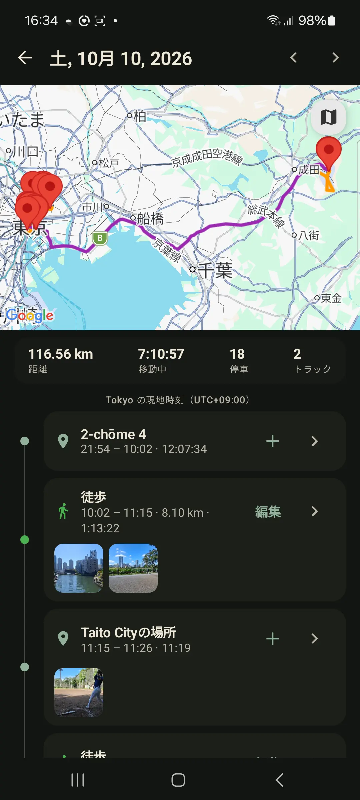

プライベートな位置履歴
Androidのルート履歴に使えるプライベートなGoogle Timeline代替
どこに行ったかを覚えておきたい。でもすべての移動をクラウドのプロフィールに結びつけたくない。GPS Loggerなら、自分でルートを開始し、端末に保存し、記録済みの日をタップして停止と移動を見返し、必要な時に書き出せます。 Google Timelineの書き出しを持ってくると、地下鉄、フライト、ロープウェイの名前はそのまま残ります。
短く言うと
GPS LoggerはAndroid向けのプライベートなルート履歴アプリです。自分で開始するGPS記録、日別タイムライン、個人アトラス、GPX/KML書き出し、アカウント不要の運用に向いています。常時こっそり記録するアプリではなく、開始と停止は自分で決めます。

自動の位置履歴だけに頼らない理由
自動の位置履歴は便利ですが、クラウド依存、分かりにくい書き出し、抜け落ちた移動、端末移行の不安がつきものです。すべてを記録するより、重要なルートを選んで記録し、ファイルとして持てるほうが合う人も多いです。
Timelineらしい部分: 1日の記録
1日の記録は日別の思い出ビューです。カレンダーで記録済みの日をタップすると、保存済みトラックから移動、停止、名前付きの場所、移動距離、移動時間、出来事の仮想タイムラインを作ります。表示用のビューなので、トラックを分割・変更・アップロードしません。
そのため旅行の日、ハイキング、現地作業、街歩き、通勤、日々のルートの記憶に役立ちます。地図上の一本の線だけでなく、その日の形が分かります。
その日の写真を足すと、撮った停止や歩きの上に現れます。GPSのない写真も場所を見つけます。置く基準は撮影時刻だからです。画像はギャラリーに残ります。アプリはスマホ上にリンクを持つだけで、アップロードも変更もしません。
GPS Loggerの違い
- 記録は自分で開始します。散歩、ハイキング、移動、ロードトリップ、通勤、現地作業を明示的なトラックとして保存できます。
- 履歴は標準で端末内に残ります。端末内のアプリデータベースに保存されます。
- 日が読みやすくなります。 地図と、停止、移動、場所、出来事、その日の写真を時系列で見られます。
- インポートした旅は移動手段を残します。 地下鉄、フライト、ボート、ロープウェイは、最初から名前付きで届きます。
- アーカイブは視覚的です。生涯の地図、カレンダー、よく行く場所、訪れた国、トラックごとの統計を見られます。
- データは持ち運べます。個別トラックをGPX/KMLで、全履歴をGPX ZIPで書き出せます。
- ライブ共有は別物です。有効にするとApp Cloudは現在地のみを共有し、保存済みの移動のサーバー側の軌跡は残しません。
GPS Loggerが向いている場合
プライベートな旅行記録、アウトドアのルート記録、通勤の記録、ロードトリップの思い出、現地訪問の記録、書き出せるGPXコレクションが欲しい場合に向いています。ワークアウトの共有やクラウドプロフィールの充実、公開の社会的なプロフィール作りより、ルートデータを覚えて自分のものにしたい人に特に向いています。
向いていない場合
手動での開始なしに、すべての店、駅、カフェ、短い移動まで完全自動で記録するタイムラインが欲しいなら、GPS Loggerは意図的にそれよりも制御された仕組みです。再起動後の自動開始は、常時記録を望む一部のユーザーに役立ちますが、通常の記録はあくまで自分で行う目に見える操作です。
Google Timelineの履歴を持ってくる方法
GoogleはTimelineをスマートフォン上に保存するようになり、ファイルとしてエクスポートできます。GPS Loggerはそのファイルをインポートできるので、何年分もの履歴が、記録するルートと並んでカレンダー、1日の記録、アトラスに入ります。
- Androidスマートフォンで［設定］→［位置情報］→［位置情報サービス］→［タイムライン］を開きます。
- ［タイムライン データをエクスポート］をタップし、ファイル（通常は
Timeline.json）をスマートフォンに保存します。 - GPS Loggerで［設定］→［Google TimelineまたはGPXをインポート］を開き、ファイルを選んでインポートを開始します。
メニュー名はメーカーによって少し異なります。Google Takeoutの旧形式のTimelineエクスポートや、iPhoneでエクスポートしたTimelineファイルも使えます。Timelineが記録した移動はそれぞれ履歴の旅になります。インポートはどのプランでも無制限で、無料版ではアプリに最新10件の旅が表示され、Proではすべて表示されます。
それらの旅は、どう移動したかを残します。地下鉄は地下鉄のまま、フライトはフライトのまま、フェリーはボートのまま、ロープウェイ、ゴンドラ、ケーブルカーはロープウェイのままです。乗馬も入ります。徒歩、サイクリング、バス、電車も同様です。GPS Loggerは、点の細い線から推測し直すのではなく、Timelineファイルに書かれた移動手段を保ちます。ファイルが名前を付けない手段は点から読み、明らかに車の移動なのに徒歩と書かれている区間は直します。ほかのアプリのGPXにはそのラベルがないので、点から読みます。
古いトラックを移行する方法
他のアプリや端末からのGPXファイルがすでにある場合は、GPS Loggerにインポートして1つのアトラスにまとめられます。一括インポートは複数のGPXファイルやZIPバックアップに対応し、どのプランでもインポートの上限はありません。
関連ガイド
- AndroidでGPS軌跡を記録してGPXを書き出す方法
- AndroidでGPXファイルをインポートする方法
- オフラインGPSログがプライバシーに重要な理由
- GPS Logger vs Strava とフィットネスSNSアプリ
よくある質問
Google Timelineをインポートできますか？
はい。スマートフォンの位置情報設定からTimelineデータをエクスポートし、GPS Loggerの［設定］→［Google TimelineまたはGPXをインポート］でそのファイルを選びます。Google Takeoutの旧形式やiPhoneのエクスポートも使えます。
GPS Loggerはルート履歴をアップロードしますか?
保存済みトラックは端末に残ります。エクスポートはスマホにファイルを書きます。一つのトラックをGPXまたはKMLとして、あるいは履歴をバックアップZIPとして。そのファイルは手元に置くか、自分で渡します。サーバーへ送られることはありません。ライブ共有は別で、オンにしているあいだ現在地だけを送ります。自分のサーバーも同じです。送るのは現在地だけで、オンにしているあいだだけです。
すべて書き出せますか?
はい。個別トラックをGPXまたはKMLで書き出せ、全履歴のGPX ZIPバックアップも作成できます。
日別タイムラインには何が表示されますか?
記録済みの日について、地図、移動距離、移動時間、停止、トラック、散歩や乗り物移動、途中で撮った写真、名前付きの場所、保存した出来事を表示できます。
インポートした旅は移動手段を残しますか?
はい。Timelineのインポートは、ファイルに書かれた移動手段を保ちます。地下鉄、フライト、ボート、ロープウェイ、乗馬、そして徒歩、サイクリング、バス、電車です。ファイルが名前を付けない手段は点から読み、明らかに車の移動なのに徒歩と書かれている区間は直します。ほかのアプリのGPXは点から読みます。
古いGPXファイルをインポートできますか?
はい。GPS LoggerはGPXファイルとZIPアーカイブをインポートし、ルートを履歴、カレンダー、1日の記録、アトラスに追加します。
アカウントなしで使えますか?
はい。記録・履歴・インポート・書き出しにアカウントは不要です。